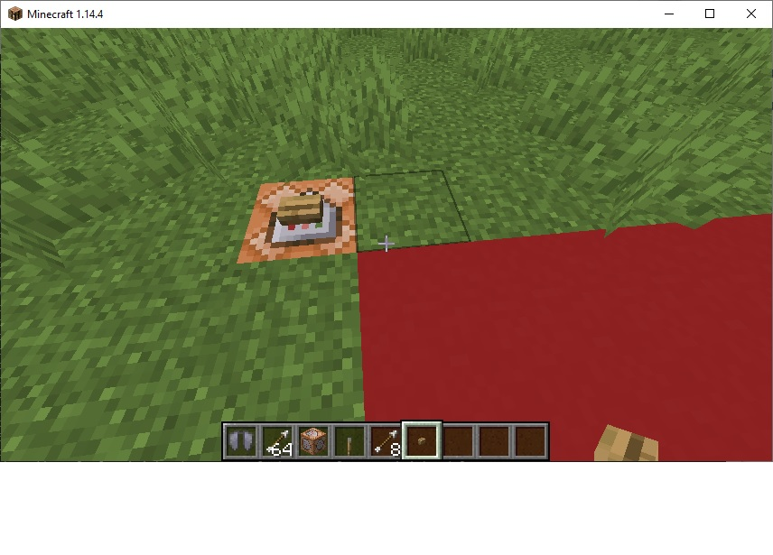
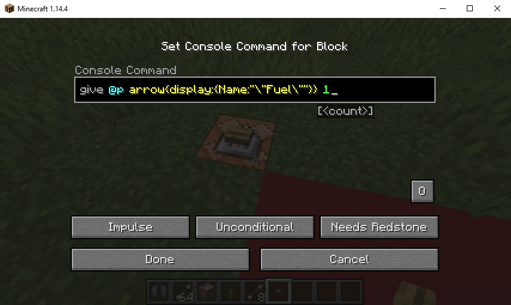

Give Player Item from a command block
A common method to give players stacks of items is to execute the command via a command block
Before we start though, the server.properties file should be modified:
- Stop the server (if it is running)
- Edit the server.properties file and change enable-command-block=false to enable-command-block=true
- Restart the server
Go to creative mode and give yourself a command block, and place it on the world.

Right click on the block and enter the command:

Place an oak button on top of the command block (note: use shift-right click)
Alternately, you could also place a lever next to the command block
When you press the button, you should be given an arrow with the custom name of "Fuel"